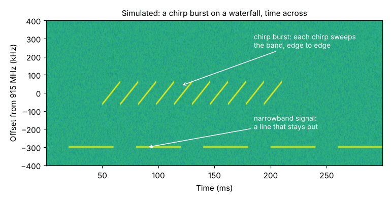
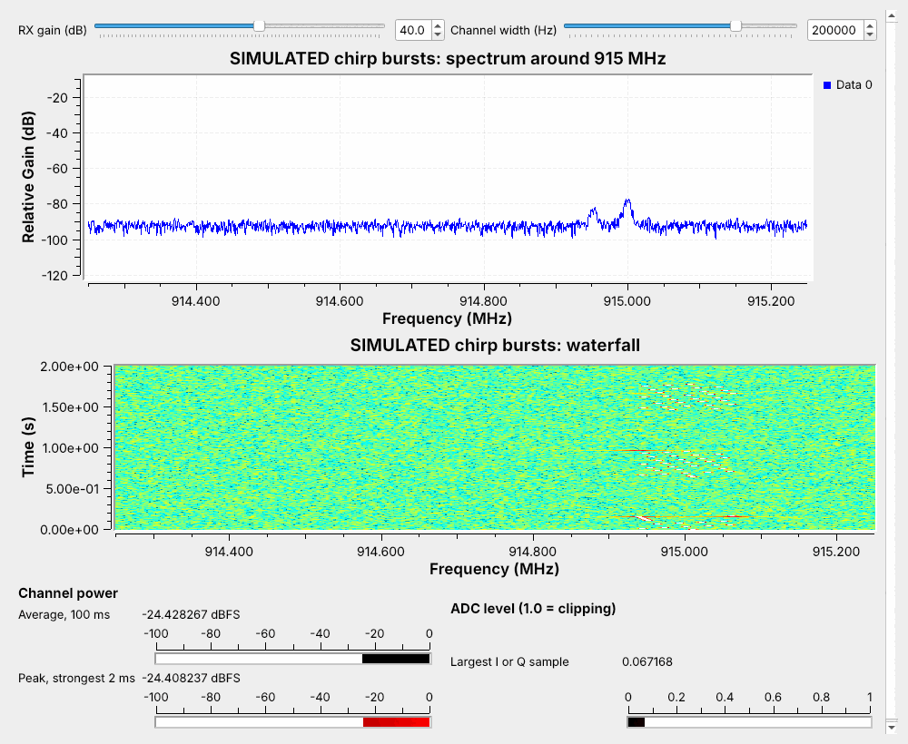

Midterm — Fox Hunt and CTF#
Midterm — Fox Hunt and CTF
Find a hidden transmitter at 915 MHz with your own PlutoSDR, then find, identify, and decode recorded signals to their flags.
Module 5: Custom Blocks & Midterm · Dr. Neil Rogers
Learning Objectives
- I can find a hidden transmitter in a fox hunt using a PlutoSDR, an antenna, and GNU Radio.
- I can solve capture-the-flag challenges that require finding, capturing, demodulating, and decoding unknown signals with GNU Radio.
Two Parts, One Submission
Fox hunt: find a hidden transmitter with your Pluto and the receiver below.
CTF: decode recordings of unknown signals to their flags.
Individual and take home. Turn in one PDF.
The midterm uses what you have built since Lesson 4. The fox hunt is a receive problem on the air: a hidden transmitter, a readout of its strength, and your feet. The capture-the-flag is the receive problem in a recording: unknown signals I release as recordings. Both parts are individual and take home. Work alone, keep your flowgraphs, and turn in one PDF on Gradescope by the date I announce, with the evidence each part asks for below.
The Fox
Hidden somewhere in the search area, sending short bursts at 915 MHz, low power.
A PlutoSDR or a LoRa radio. Your receiver must work for either.
You hunt with your own Pluto and antenna.
The fox is a small transmitter I hide inside a search area, sending short bursts at 915 MHz at low power. It might be a PlutoSDR or it might be a LoRa radio, and the receiver below finds either one, because it measures power in a channel and does not need to decode anything. You hunt with your own PlutoSDR and your own antennas, or the ones that come with the Pluto. I announce the search area and the hours the fox is on the air. Nothing you build for the hunt transmits.
The Fox-Hunt Receiver
PlutoSDR Source at 1 MS/s, 250 kHz below 915 MHz.
Spectrum and waterfall for finding the burst.
Channel power in dBFS, average and peak; ADC level to catch clipping.
![The MT-foxhunt flowgraph in GNU Radio Companion: a PlutoSDR Source at 1 MS/s with its LO at 914.75 MHz feeds a frequency sink, a waterfall sink, a Frequency Xlating FIR Filter centered 250 kHz up with a low-pass as wide as the Channel width slider, and a Complex To Float; the channel goes through Complex to Mag^2 into a 100 ms Moving Average and a 2 ms Moving Average with a Max over the last quarter second, each through Log10 to a Number Sink; the I and Q samples go through Abs and Max to a second Number Sink labeled ADC level](../../viz/img/MT-grc-foxhunt.png)
MT-foxhunt.grc is the receiver. The Pluto’s LO sits 250 kHz below 915 MHz, so its DC spike from Lesson 5 stays off the fox. A Frequency Xlating FIR Filter moves 915 MHz to the center and keeps a channel as wide as the Channel width slider. Complex to Mag^2 turns each sample into power, and the readout shows it in dBFS two ways: the 100 ms average, and the strongest 2 ms in the last quarter second, which catches a short burst the average would smear out. The ADC level readout shows the largest I or Q sample; 1.0 is full scale.
What a LoRa Burst Looks Like
A chirp: a tone that sweeps from one edge of its band to the other.
Long chirps draw diagonal stripes; short ones fill a block with sharp edges.
A narrowband signal stays on one line.

If the fox is a LoRa radio, each burst is a train of chirps: a tone that sweeps across the radio’s band from one edge to the other, again and again. The figure is simulated and turned on its side, with time across; GNU Radio’s waterfall runs time down the screen. Long chirps draw diagonal stripes. Short ones blur into a block with sharp edges at both sides of the band, which a narrowband signal never makes. If the fox is a Pluto, expect whatever burst I send. You do not need to decode either one. Set Channel width to cover the burst you see.
Hunting With One Antenna
Find the burst on the waterfall, then watch the Peak readout.
Turn slowly: your body blocks the signal when the fox is behind you.
Walk toward the strongest reading and take a new bearing.
The Pluto’s antennas hear all directions about equally, so your body is the direction finder. Hold the Pluto close against your chest and turn slowly through a full circle, stopping for each burst. The reading drops by several dB when your body sits between the antenna and the fox, so the fox is behind you at the lowest reading. That null is sharper than the peak, so use it for the bearing. Walk that way, then stop and take a new bearing. The readings jump with every step, so compare several bursts before you trust a change.
Up Close: Lower the Gain
Near the fox the ADC clips, as in Lessons 4 and 5.
When ADC level reaches 1.0, the readout stops rising: lower RX gain.
Compare readings only at the same gain.

Lesson 4 showed what happens when a signal is bigger than the ADC’s range: the samples clip, the spectrum grows false signals, and a stronger signal no longer reads stronger. Close to the fox that is your hunt. When the ADC level readout reaches 1.0, the power readout stops rising, so every step looks the same. Lower RX gain by 10 dB and keep going. A reading means something only together with its gain, so log both. Within a few meters, even 0 dB can clip; take the antenna off and the Pluto still hears the fox.
Fox Hunt: Steps
Put
MT-foxhunt.grcin a folder, open it in GRC, plug in your Pluto with an antenna on its RX port, and run it. If GRC cannot find the Pluto, the Lesson 5 page has the install checks and the macOS URI note.With the fox on the air, start at RX gain 40 dB and watch the waterfall near 915 MHz. When a burst appears, set Channel width to cover it, between about 125 and 250 kHz, and watch the Peak readout jump with each burst.
Screenshot the whole window the first time you see the fox, for far.
Take a bearing by body shielding: hold the Pluto against your chest, turn through a full circle in steps of about 45°, and record the Peak reading at each step over two or three bursts. The fox is opposite your lowest reading. Write down where you stood, the compass bearing to the fox, the peak reading, and the RX gain.
Walk along that bearing, and take a new bearing whenever the reading has climbed by about 10 dB or the path turns. Each bearing goes in your log.
When ADC level reaches 1.0, lower RX gain by 10 dB and note it in the log. Near the fox, take the antenna off if 0 dB still clips.
When you find the fox, do not touch or move it. Screenshot the window beside it for near, and photograph where it sits.
Fox Hunt: What to Turn In
Where the fox was: the building and room or spot, a photo of where it sits, and the time you found it.
Two screenshots of the receiver window: far, when you first saw the fox, and near, beside it. Each shows the waterfall, the readouts, and the RX gain.
A bearing log of at least four bearings: the time, where you stood, the compass bearing to the fox, the Peak reading in dBFS, and the RX gain.
Two or three sentences on what worked: where the body null helped, and where the gain or reflections fooled you.
Capture the Flag
A set of SigMF recordings of unknown signals, which I release.
Find, identify, demodulate, and decode each one in GNU Radio.
Each recovered flag is worth points.
The second part is a set of recordings of unknown signals, which I release with the midterm. Each is a SigMF pair like the L7 Lab’s test files: the samples in .sigmf-data, and the datatype, sample rate, and center frequency in .sigmf-meta. For each recording, find the signal, identify it, demodulate and decode it in GNU Radio, and recover its flag, a line of text. Each flag is worth points, and a flag counts only with its writeup. Some signals may be ones Module 6 covers in depth; the lesson pages on this site are yours to read ahead.
Find, Demodulate, Decode
Read the meta file, then look: spectrum, waterfall, time.
Name the modulation, then move it to the center at a rate you know.
Build or reuse the receiver that fits, and read the flag.
Work each recording from the outside in. Read the .sigmf-meta first: the datatype tells you how to open it, and the sample rate sets every display. Play it through a SigMF Source (Minimal) and Throttle into a frequency sink, a waterfall, and a time sink, and find the signal. Ask what changes: the amplitude, the frequency, or the phase, and how fast. Then move the signal to 0 Hz with a Frequency Xlating FIR Filter, decimate to a rate the receiver you need expects, and build or reuse that receiver from the lesson that fits.
Identifying a Signal
Ask these of every recording, in order, and write the answers down; they become your writeup.
How do I open it? The
.sigmf-metagives the datatype.cf32_leis complex float.ci16_leis interleaved 16-bit I and Q: in the SigMF Source choose complex short, and follow it with IShort To Complex, scaled by 1/32768.Where is it? On the spectrum and waterfall, find its offset from the center frequency, and whether it is on all the time, in bursts, or hopping.
How wide is it? Its bandwidth on the spectrum points at its rate: a few hundred hertz for a keyed tone, a few kilohertz for voice, wider for fast data.
What changes? Look at the magnitude and the phase or frequency on a time sink after moving it to 0 Hz. On and off is keying; two or more frequencies is FSK; steady magnitude with jumps in phase is PSK, which a constellation sink shows as points; a wandering amplitude is AM or PAM.
How fast? The shortest pulse or symbol sets the symbol rate, and the symbol rate sets the samples per symbol your receiver needs.
What is the message? Audio you can hear, tones you can name, or bits to pack into bytes. Framed packets need the access code and header your lesson receivers use.
CTF: What to Turn In
For each challenge you solve:
The flag, exactly as you recovered it.
A screenshot of your flowgraph in GRC, with the display or text output that shows the flag.
How you identified the signal, in a few sentences: what the waterfall, spectrum, or time sink showed, which modulation that pointed to, and the settings you chose (offset, decimation, symbol rate, and the like).
A flag without its writeup does not count. Partial work on an unsolved challenge, such as a correct identification and a demodulated signal that you could not decode, is worth reporting; it can earn partial credit.
Rules and Grading
Rules. Work alone. You may use this course site, your own flowgraphs and notes, the GNU Radio wiki, and PySDR. You may not discuss the fox’s location or any challenge with anyone but me until the midterm closes. Generative AI is not allowed (syllabus, Authorized resources). The hunt is receive only: never transmit at any time during the midterm.
Part |
What earns credit |
Weight |
|---|---|---|
Fox hunt |
Found the fox: its location, with a photo |
20% |
Evidence: the far and near screenshots and the bearing log |
20% |
|
CTF |
Points for each flag, counted only with its writeup |
50% |
Quality of the writeups: identification and flowgraph |
10% |
Downloads
MT-foxhunt.grc: the fox-hunt receiver. It needs a PlutoSDR in extended-frequency mode, so it was compiled under GNU Radio 3.10 but not run here on a radio.
I release the CTF recordings when the midterm opens. GRC 3.10 marks the SigMF Source (Minimal) block as deprecated and warns when the flowgraph loads; the warning is harmless.
The L7 Lab page shows how to play a
.sigmf-datafile through a File Source; the SigMF Source (Minimal) does the same and reads the sample rate for you.
Looking Ahead
Module 6 builds the receivers for real signals: CW, DTMF, HD Radio, PSK, hopping, and more.
Keep your midterm flowgraphs; they are a start on Module 6.
Module 6 starts with Lesson 12, CW, and works through the signals you meet on the air, from keypad tones to aircraft. Keep every flowgraph you build for the midterm; several will help there.